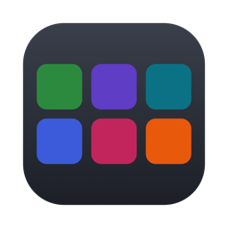
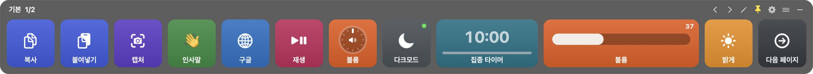
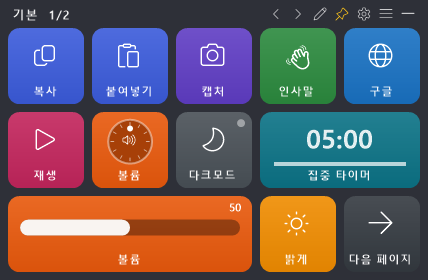

EasyDeck 설치 방법 설명서장비 없이, 화면 위
버튼판 하나로 방송 끝
단축키, 자막 입력, 앱 실행, 음량 조절을 버튼 한 번에. 스트림덱 장비를 사지 않아도 되는 무료 프로그램입니다. 맥과 윈도우에서 모두 씁니다.

끌어다 놓으면 버튼이 생깁니다
설정 파일을 만질 필요 없이, 마우스로 끌어다 놓기만 하면 됩니다.

🧩 팔레트에서 끌어 놓기
버튼·토글·노브·슬라이더·타이머를 원하는 칸에 끌어다 놓습니다.

📂 앱·파일·링크·글자
Finder의 앱, 찬양 폴더, 교회 홈페이지 주소, 자주 쓰는 문장을 덱에 놓으면 아이콘과 함께 버튼이 됩니다.

↔︎ 모양도 한 번에
가로 한 줄, 세로 한 줄, 가로↔세로 전환. 마음에 안 들면 바로 되돌리기.
할 수 있는 것
스트림덱 장비로 하던 일을 대부분 화면에서 합니다.
- ⌨️ 단축키송출·자막 프로그램 단축키를 버튼 하나로. 실제 키를 눌러 녹화해서 넣습니다
- ✍️ 글자 입력교회 이름, 설교 제목, 인사말을 한글 그대로 입력하거나 붙여넣기
- 🚀 앱·파일·웹 열기방송 프로그램, 찬양 폴더, 유튜브 스튜디오를 버튼으로
- 🔊 음량·미디어노브와 슬라이더를 시스템 음량에 연결, 재생·다음 곡
- ⏱ 타이머설교·광고 시간 재기, 휠로 시간 조절, 끝나면 알림
- 👆 클릭·더블클릭·길게버튼 하나에 세 가지 동작을 따로 넣기
- 📑 여러 페이지예배용·편집용 페이지를 나누고, 앞에 있는 앱에 맞춰 자동 전환
- 🌐 전역 단축키덱을 누르지 않아도 키보드로 버튼 실행, ⌥⌘D로 덱 보이기·숨기기
- 🌫 화면을 가리지 않게항상 위, 마우스를 치우면 흐려짐, Ctrl+휠로 크기 조절
- 💾 내보내기·가져오기만든 덱을 파일 하나로 다른 맥과 나누기 (위험한 동작은 먼저 보여 줌)

예배 방송에서는 이렇게
버튼 이름과 동작은 교회에 맞게 바꾸세요.
| 다음 슬라이드 | key right |
| 교회 이름 자막 | type 라온동행교회 |
| 송출 프로그램 열기 | 앱을 덱에 끌어다 놓기 |
| 설교 타이머 | 타이머 위젯 30분 |
| 모니터 음량 | 슬라이더 + 시스템 음량 |
준비물은 이것뿐
- 맥 (macOS 13 이상, 애플 칩·인텔) 또는 윈도우 10·11 컴퓨터
- 그 밖에 살 장비는 없습니다
받아서 압축을 풀면 끝입니다. 윈도우용은 실행 파일 하나(0.1MB)라 따로 깔 것이 없습니다.
설치 방법
처음 한 번만 경고 창과 권한 질문이 나옵니다. 유료 인증을 받지 않은 무료 프로그램이라 나오는 안내입니다.
🍎 맥
- 위의 맥용 받기를 누르고, 받은 zip 파일을 더블클릭해 압축을 풉니다.
- EasyDeck.app을 응용 프로그램 폴더로 끌어다 놓습니다.
- 앱을 오른쪽 클릭 → 열기. 그래도 막히면 시스템 설정 → 개인정보 보호 및 보안 맨 아래 [그래도 열기].
- 손쉬운 사용 권한을 물으면 허용합니다 (단축키·글자 입력에 필요).
- 켰는데도 안 되면 손쉬운 사용 목록에서 EasyDeck을 −로 지우고 +로 다시 넣은 뒤 앱을 다시 켭니다.
🪟 윈도우
- 위의 윈도우용 받기를 누르고, 받은 zip 파일을 오른쪽 클릭 → 모두 압축 풀기.
- EasyDeck.exe를 문서 폴더 같은 곳에 두고 더블클릭합니다.
- "Windows의 PC 보호" 창이 뜨면 [추가 정보] → [실행].
- 덱이 화면 오른쪽 위에 뜹니다. 작업 표시줄 오른쪽 알림 영역 아이콘으로 메뉴를 엽니다.
- 윈도우를 켤 때 자동으로 시작하려면 ⚙︎ 설정 → 윈도우 시작 시 자동 실행.
새 버전은 같은 방법으로 받아 앱(exe)만 바꾸면 됩니다. 만들어 둔 버튼은 그대로 남습니다. 맥에서 만든 덱(profile.json)을 윈도우에서 그대로 가져와 쓸 수도 있습니다.

알아 두실 점
⚠️ 이런 곳에서는 안 될 수 있어요
암호 입력 칸 같은 보안 입력 칸과 일부 게임에는 키 입력이 들어가지 않습니다. 윈도우에서는 관리자 권한으로 실행한 프로그램에도 키가 들어가지 않습니다. 밝기 조절은 노트북 내장 화면만 됩니다. 한글 입력이 가끔 어긋나면 type 대신 paste를 쓰세요.
🙏 언제든 연락 주세요
쓰시다가 안 되는 것(버그)이 있거나, 이런 기능이 있었으면 좋겠다는 생각이 드시면 언제든 알려 주세요. 실제로 쓰시는 이야기가 가장 큰 도움이 됩니다.
회원 가입 없이 카카오톡으로 바로 이야기할 수 있습니다.
🤝 EasyDeck은 자율 후원으로 운영됩니다
후원은 부담을 갖지 않으셔도 됩니다. 무료로 사용하셔도 괜찮습니다.